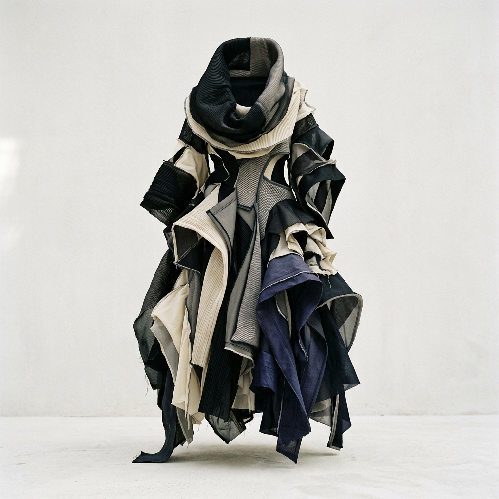

Indumentaria creada a partir de materiales orgánicos, reciclados y biodegradables.
EXPLORAREn Alta Pilcha exploramos nuevas formas de hacer indumentaria a partir de materiales que ya existen y materiales de origen orgánico.
Una silueta esencial creada a partir de materiales seleccionados para reducir el impacto de su ciclo de vida.
We study what clothes are made of.
Materiales de origen natural seleccionados con criterios de producción responsable.
Materiales recuperados y transformados nuevamente en materia textil.
Materiales pensados para reducir su permanencia como residuo bajo las condiciones adecuadas.
Extracción y limpieza de la materia prima.
Patronaje y estudio morfológico.
Una silueta esencial diseñada para una nueva generación de materiales.
Organic cotton
Recycled fibers
Textile / 280 GSM
Buenos Aires, Argentina
Organic
Recycled
Biodegradable
A study of materials, form and reuse.
Exploración morfológica.
Texturas de recuperación.
Volumen y densidad.
Asimetría constructiva.